기역과 함께하는 깊이있는 의학공부
췌장암 - 항암화학치료 youtube
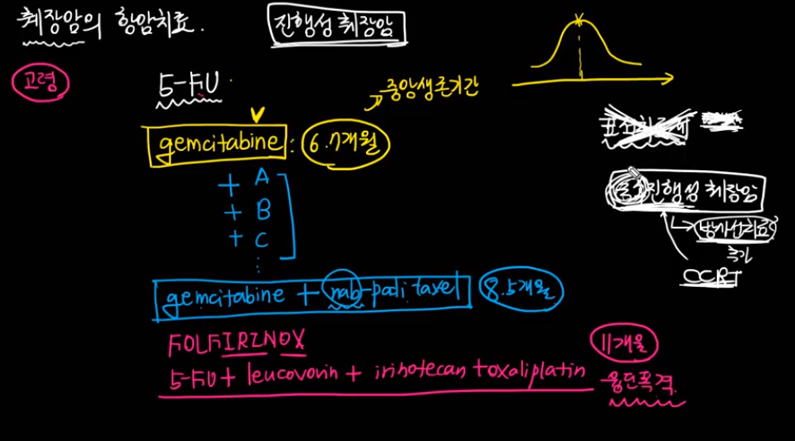
췌장암 - 유전자 youtube
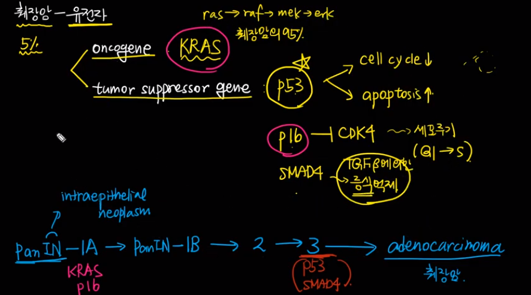
췌장암 - 위험인자 youtube
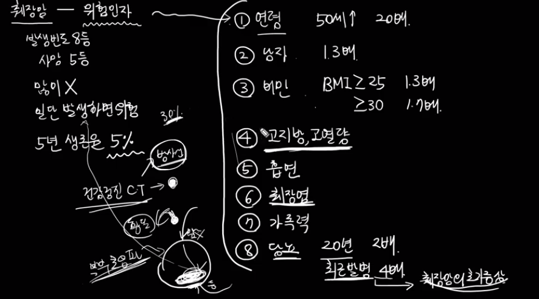
BD-IPMN, 어떻게 해야 하나 youtube
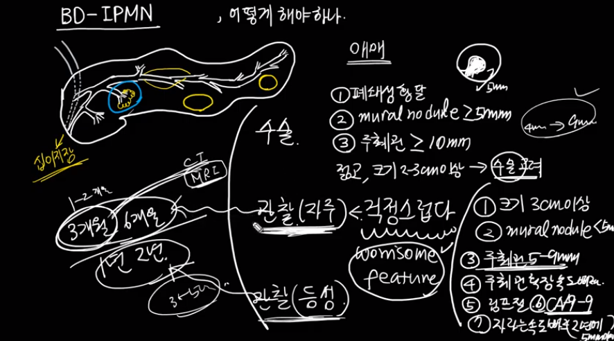
췌장에 물혹(낭종)이 생겼다는데, 어떻게 해야 하나 youtube
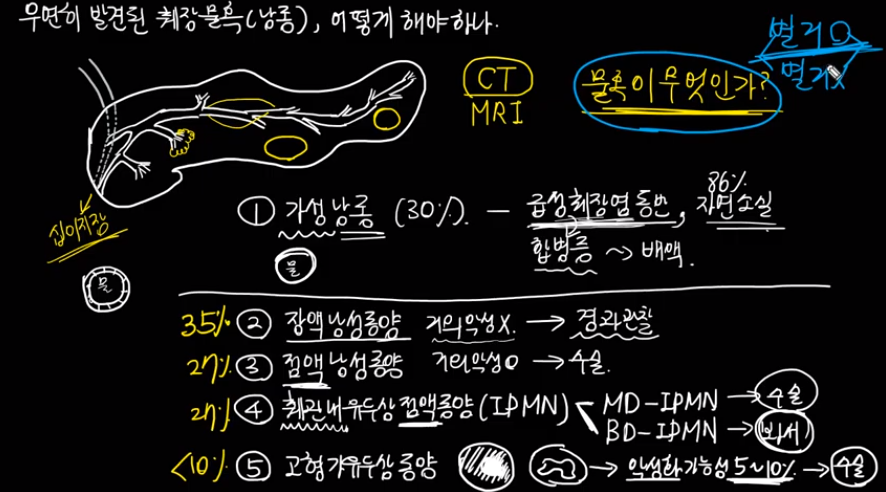
담석에 의한 복통, 특징은? youtube
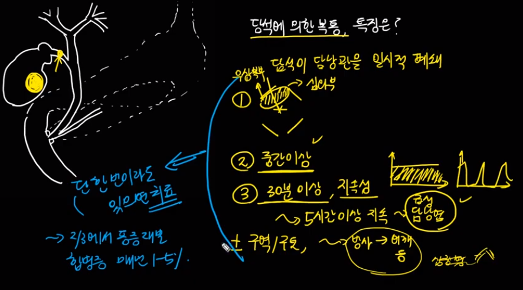
증상이 없는 담석, 수술하지 않는 이유 youtube
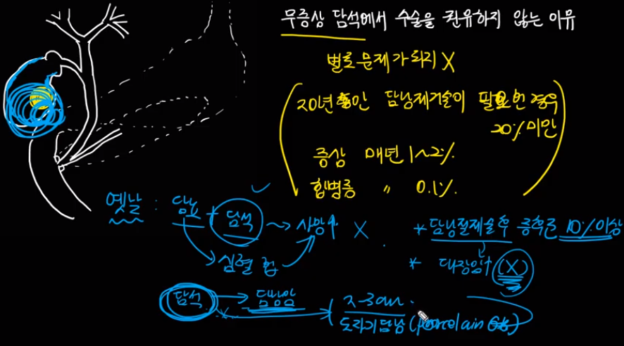
미리지증후군(Mirizzi syndrome)이란 youtube
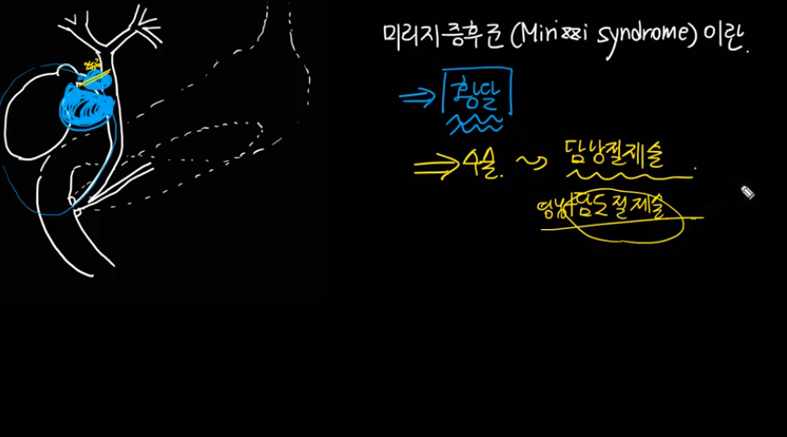
담석이 없는데 담낭염이 생기다니 youtube
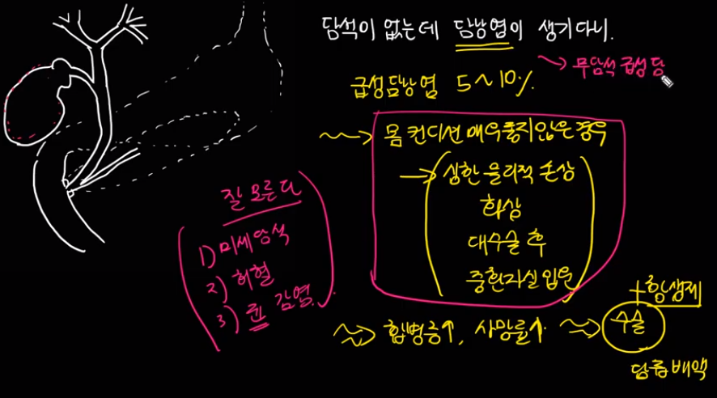
담석에 의해 급성 담낭염이 발생하는 이유 youtube
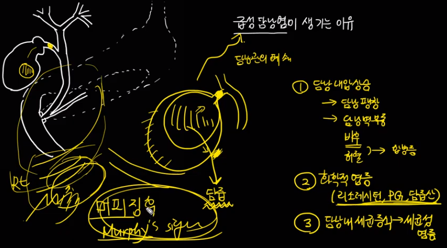
담석의 약물치료 youtube
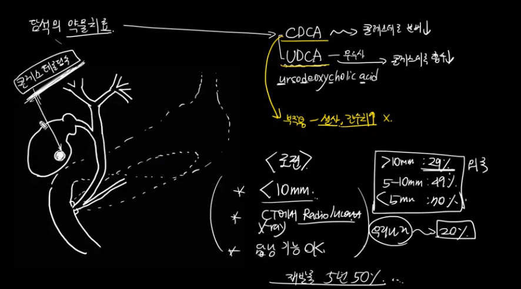
담석, 어디에서 문제를 일으키는가 youtube
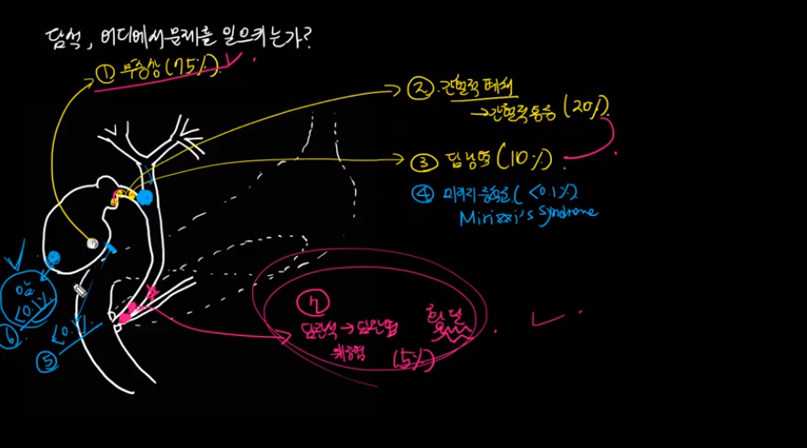
담석, 무증상이라도 수술하는 경우 youtube
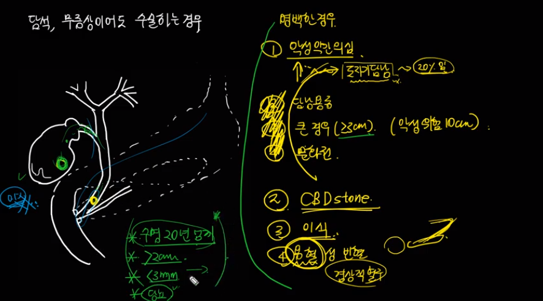
담낭용종, 어떻게 치료할 것인가 youtube
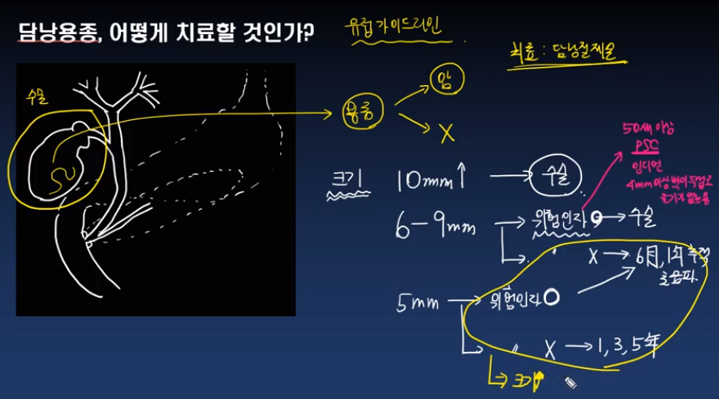
총담관결석(CBD stone)에 관하여 youtube
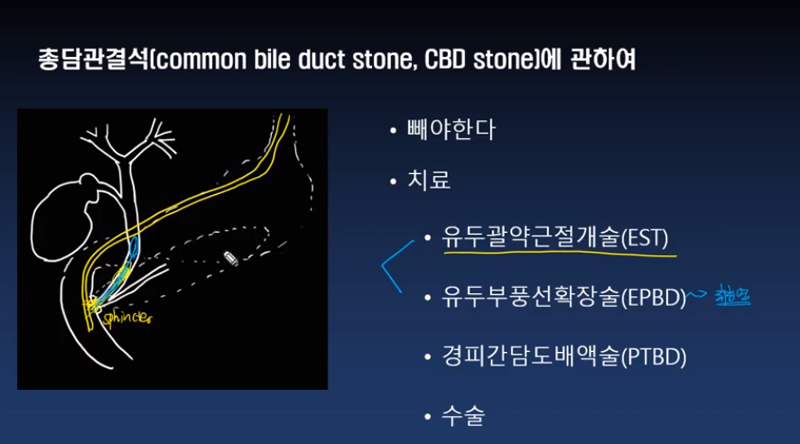
담석으로 수술했는데 담낭암이라니 youtube
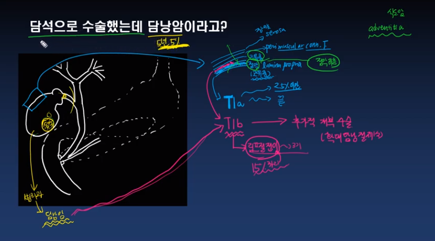
췌장은 우리몸속에서 무슨일을 하는가 youtube
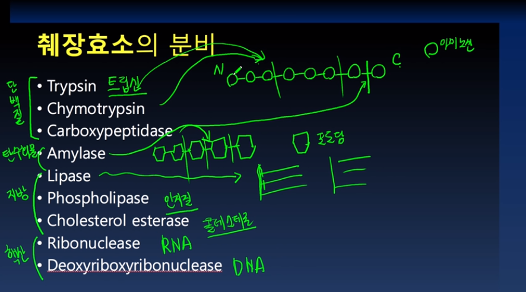
자가면역성췌장염, 환자분이 너무 잘 알아서 어려운 병 youtube
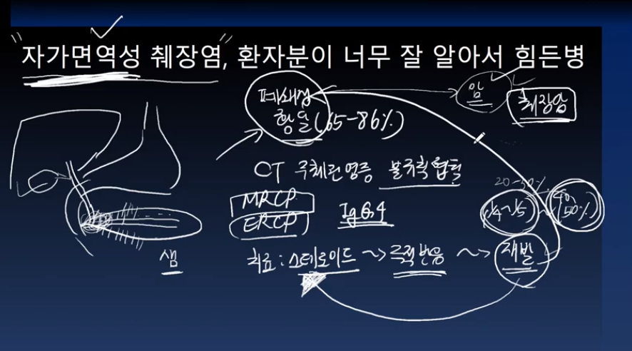
진행성 췌장암 - 항암치료보다 더 중요한 것 youtube
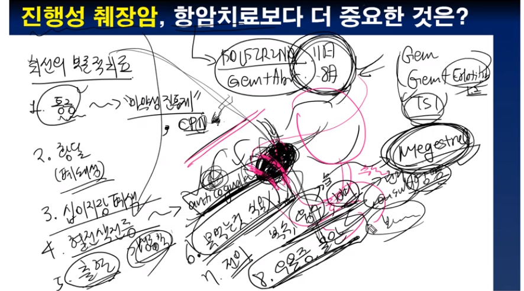
맨위로